Requirements
DailyBee is built from its source code on the machine it will run on. You need Node.js 22 or newer and git; pnpm comes with Node through Corepack, and there are no native modules to compile.
Windows 10 or 11. Window titles and the browser's address bar come from UI Automation, which is part of Windows, so there is nothing else to install. Unsigned builds show a SmartScreen prompt on first run; machines with Smart App Control switched on refuse unsigned programs entirely (see Troubleshooting).
macOS. DailyBee asks for three permissions on first run: Accessibility, Automation per browser and Screen Recording. Building needs the Xcode Command Line Tools (xcode-select --install).
Linux. An X11 session with xdotool for app and tab capture (sudo apt install xdotool). The AppImage needs libfuse2 on some distributions. On Wayland the timer and reports work, but applications cannot see the foreground window, so apps and tabs are not recorded; Settings › System permissions tells you which case you are in.
Build from source
The desktop app is built per platform: build on Windows for Windows, on macOS for macOS, on Linux for Linux. There are no native modules to compile.
git clone <repository> daily-bee
cd daily-bee
corepack enable # once; makes the pinned pnpm available
pnpm install
pnpm dev # runs DailyBee with real tracking (hot reload)
pnpm dev:demo # the same, with a sample day instead of real trackingcorepack enable needs an administrator terminal on Windows. Without it, prefix every pnpm command with corepack (corepack pnpm install, corepack pnpm dev); the build scripts handle the rest themselves.
Package it
corepack pnpm package # installer: apps\desktop\release\DailyBee-Setup-<version>.exe
corepack pnpm package:zip # portable: apps\desktop\release\DailyBee-<version>-win.zipThe zip is what a machine with Smart App Control can build: the installer build runs an unsigned installer stub that Smart App Control blocks, so the installer is built elsewhere or by the release workflow on GitHub Actions.
Run it
Run DailyBee-Setup-<version>.exe to install per user: it adds a Start menu entry and is what the self-updater updates once you host a feed. Or unzip the zip anywhere (for example %LOCALAPPDATA%\Programs\DailyBee) and run DailyBee.exe; zips do not self-update. On another machine an unsigned build shows SmartScreen's Windows protected your PC: choose More info, then Run anyway.
Package it
pnpm package # apps/desktop/release/DailyBee-<version>.dmg and .zipRun it
Open the dmg and drag DailyBee to Applications. Gatekeeper refuses an unsigned app the first time: open System Settings › Privacy & Security, choose Open Anyway, and launch it again. For other people, sign and notarize with an Apple Developer ID; RELEASING.md explains the variables.
Package it
pnpm package # apps/desktop/release/DailyBee-<version>.AppImage and .debRun it
Make the AppImage executable (chmod +x DailyBee-*.AppImage) and run it from wherever you keep it; it needs libfuse2 on some distributions. The deb (sudo apt install ./DailyBee-*.deb) adds a menu entry and pulls the dependencies.
Without packaging: pnpm build compiles everything into apps/desktop/out/ and pnpm start runs Electron on it, the fastest loop for trying a build on your own machine. The developer guide (DEVELOPMENT.md) and the Windows walkthrough (TESTING.md) in the repository go deeper.
The wizard
DailyBee opens with a two-step wizard. Nothing is sent anywhere during it.
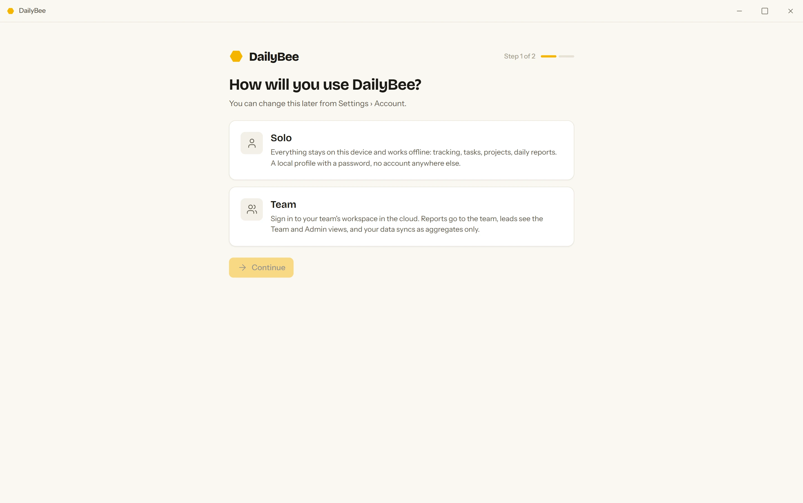
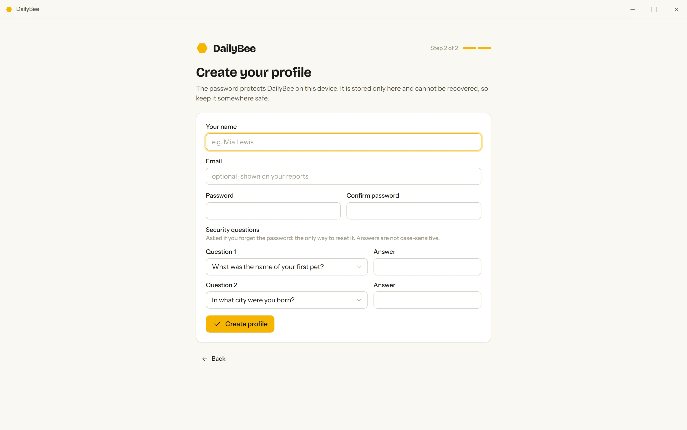
- Choose Solo or Team. Solo works offline and never touches the network. Team asks for a Workspace location, the address of a server you or your company runs (see Team server); a DailyBee Cloud option appears only when the build was pointed at a live server.
- Name, email, password. The email is optional and only shown on your reports. The password locks the profile on this computer; it is not an account. Create profile opens Today.
- More people on one computer? Each profile keeps its own tracked days, tasks and reports in its own database. The profile list appears when there is more than one profile and offers Create a new profile and Restore from a backup….
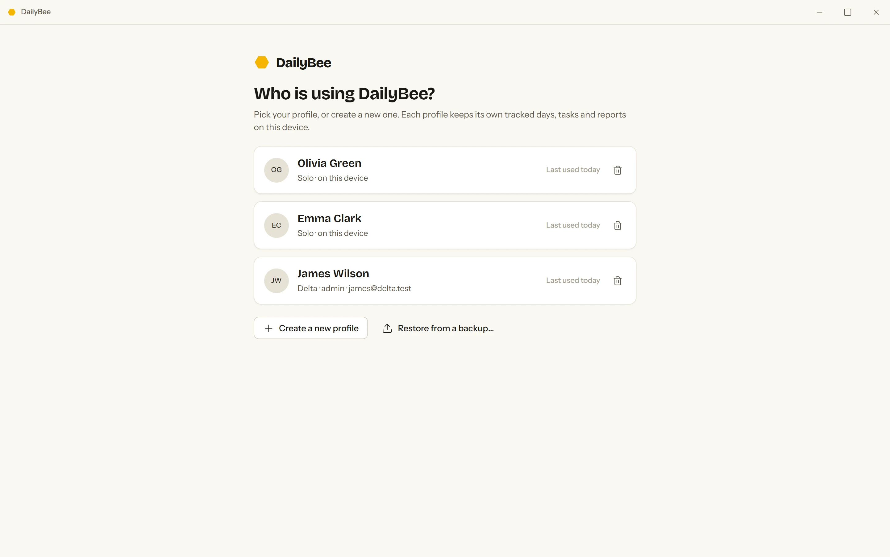
Permissions
Nothing to grant. UI Automation, part of Windows, supplies window titles and the browser's address bar. If a browser hides its address bar (full screen, some kiosk modes) DailyBee falls back to the window title.
On first run DailyBee asks for three things. Settings › System permissions opens the right panes and shows what is granted; without a permission it falls back to app names.
- Accessibility: window titles and the address bar of the browser in front.
- Automation, once per browser: the active tab's address through AppleScript.
- Screen Recording: titles of other apps' windows (macOS hides them otherwise). No screen content is captured.
Install xdotool; DailyBee reads the active window with it on X11. Firefox tabs come from the session store. On Wayland no application can see the foreground window, so DailyBee keeps the timer and the reports but leaves the timeline empty; Settings › System permissions says which case you are in.
Track a task

- Start. Start task on Today, Start a task…, Start recent or Resume “…” in the tray menu, the search palette (Ctrl K), or the global shortcut Ctrl Alt D, which resumes the last task. The start dialog asks what you are working on, what done looks like and a size from Trivial to Epic; every question can be skipped.
- While it runs, the line under the task says what is being recorded (Now in VS Code · timer-sync.ts). Pause tracking, on Today and in the tray, stops app and tab capture while the timer keeps counting. Settings › Tracking › Private apps lists apps that are never recorded; adding one also removes today's captures of it.
- Check-ins. A Drifting? card after a few minutes on a distraction site, and a Halfway pulse partway through; each has three chips and the answers go into the daily report. Settings › Check-ins sets the delays and the quiet time after Taking a break. Send a test check-in in the palette shows one.
- Stop. Stop opens Wrapping up: how it went, a size check, a blocker if there was one, then Save & stop. From the tray, Stop now saves the entry as partly done with no questions and Stop with wrap-up… opens the dialog.
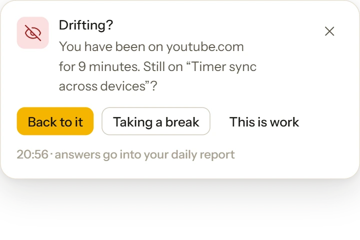
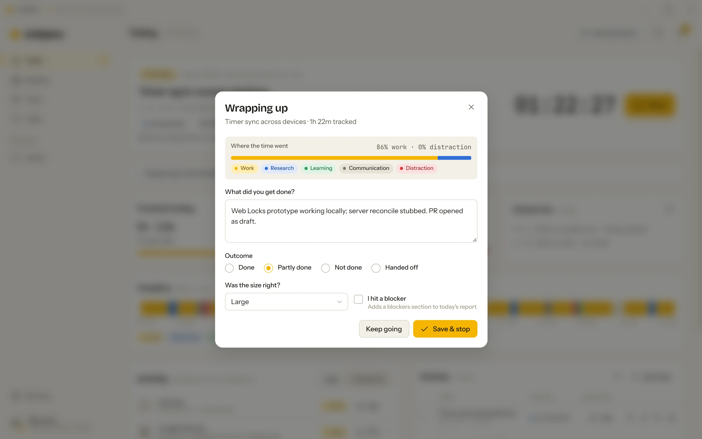
Time away
Idle, lock and sleep pause the timer. When you come back after more than a couple of minutes, a Welcome back card asks what to do with the time: Leave it out, Count it as work, or Stop at hh:mm, the moment you left. It floats at the top-right of the screen when another app is in front, so you can answer without opening DailyBee. Short absences are simply counted.
Settings › Tracking holds the knobs: Idle detection and Pause after (how long without input counts as away), Ask about time away to switch the card off, and Round entries to 5 min.
Correct the record
Forgot to start the timer, or stopped it late? On the Entries card (Today, or a day opened from History) every row has Correct, Split and Delete, and the card has Add entry for something the timer missed.
- A corrected row gets an Edited badge (Added by hand and Split off for the other cases), the card header counts them, and History shows n edited per day.
- The clock icon opens the Change log: one line per change, each with a hash chained to the line before it. The app can add lines but never alter or remove them, and the dialog says Chain verified.
- The day's report is rebuilt after each correction; one that was already sent shows Changed since sent and offers Send again.
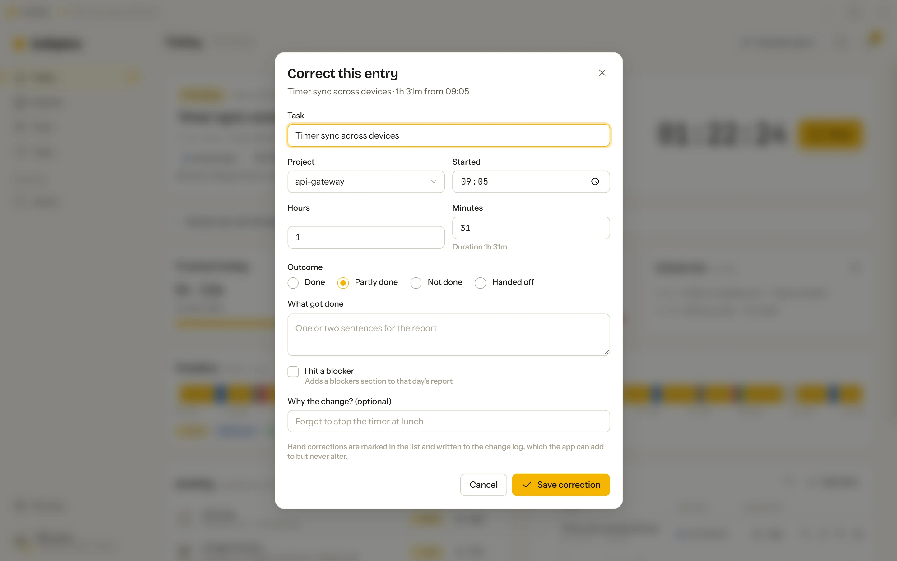

Reports

- Generate report from the top of Today, the tray menu or the palette. The draft lists what got done and what is in progress, the time mix, and the check-in answers; edit any line.
- Send report delivers it to Slack or email, Copy markdown puts it on the clipboard for anywhere else. Delivery is configured under Settings › Delivery: a Slack incoming webhook and channel, an Email to address with an SMTP URL, and Send at for a fixed time every day. Until something is configured the card says so.
- Optional polish. Settings has a Polish wording with Claude switch that uses your own Anthropic API key; the report is otherwise assembled entirely on your machine.
The Reports screen has three tabs: Today (the current draft and its state), Week (seven days with tracked time, entries, focus and report state, hours per project against last week and the weekly budget, and the tasks that fell behind) and History (every day; a row opens it with the same cards as Today).
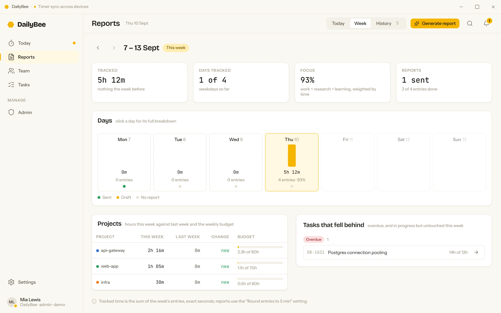
Tasks and projects
Tasks › New task creates a backlog item that appears in the Start-task list, with a size and a priority (Low, Normal, High, Urgent). Filter by project, status, priority and size, or search. The Board view moves a card to another column by dragging it. A Solo profile shows no owners; a team account shows the owner and a Mine filter.
Admin › Projects holds New project (name, colour, weekly budget); click a card to edit, archive or delete it. In a Solo profile the Admin screen is computed from your own days, entries, tasks and projects; with a workspace it switches to team data.
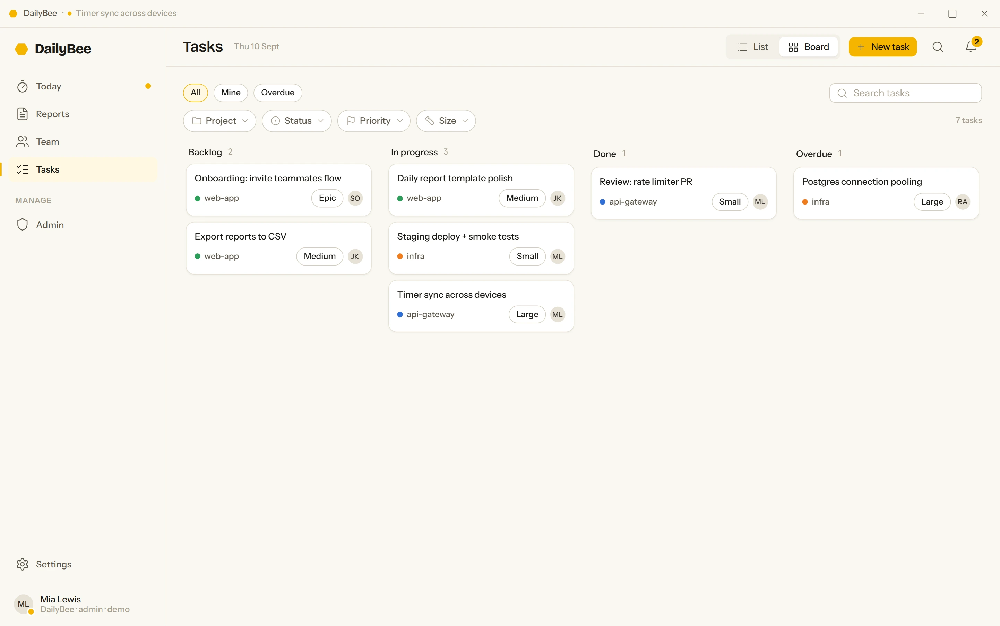
Tray, shortcut, startup
Closing the window keeps DailyBee tracking in the tray (menu bar on macOS). Right-click the icon:
- Resume “…” / Start recent / Start a task…when idle
- Stop now / Stop with wrap-up…when a task runs
- Generate report…drafts today
- Pause trackingtimer keeps counting
- Floating widgeta small always-on-top timer
- Restart to update to DailyBee x.y.zwhen an update is downloaded
- Open DailyBee / Quit DailyBee
- Global shortcut: Ctrl Alt D (⌘ ⌥ D on macOS) stops the running task or resumes the last one. Settings › Keyboard shortcut changes the combination or turns it off, and the card says whether the system accepted it. A system notification says which task started or stopped.
- Startup: Settings › Startup › Launch at login and Start in the tray. Registration with the operating system happens in packaged builds; a development build says so.
- Notifications: everything that lands in the bell (task starts and stops, check-ins, reports, sync trouble) also shows as a system notification, and clicking it opens DailyBee. Settings › Notifications › Desktop notifications switches that off.
- Search: Ctrl K opens the palette: type a task name or “report”, or pick an action at the top.
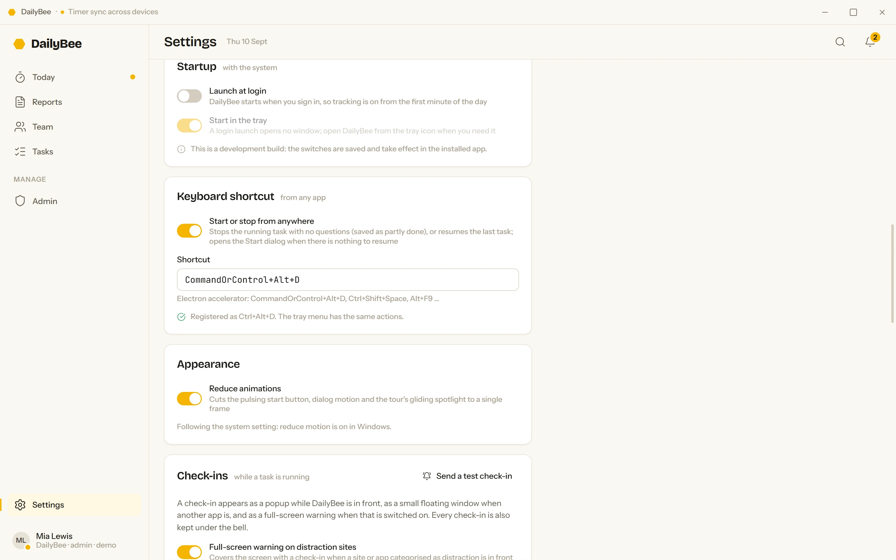
Backups and updates
- Backup: Settings › Backup › Export backup… saves the whole profile as one .dailybee file (it is the profile's database). Restore… brings one back into this profile and keeps the current data beside it; on the profile list, Restore from a backup… adds it as a new profile. Solo profiles are reminded in the bell after a month without a backup. Keep one somewhere other than this computer.
- Updates: Settings › Updates shows the version and what the self-updater is doing; Check for updates asks the feed now. An installed app checks twice a day, shows Restart to update in Settings, the tray and the bell once a version is downloaded, installs it when DailyBee quits, and lists What's new after the restart. Zips do not self-update, and a build made without an update feed says so instead of checking.
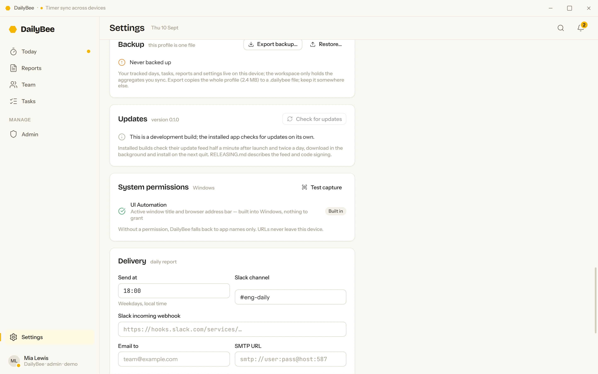
Team server (optional)
The sync API lives in apps/api and runs with Postgres. deploy/cloud starts the API, the database and the update feed with one Docker Compose file; the repository's deploy/cloud/README.md has the steps and a walkthrough for Coolify.
cd deploy/cloud
cp .env.example .env # set the database password and the public address
docker compose up -d --build # api, postgres, update feed- Point a desktop build at it with VITE_DAILYBEE_CLOUD_URL when packaging, and the wizard's DailyBee Cloud option becomes real. Any build can also enter the address by hand under Your own workspace server.
- Connect the app: choose Team in the wizard, or later Settings › Workspace with the API URL and an Access token from your admin. Team and Admin then show the workspace; before that they show a clearly labelled sample team.
- What the server receives: app names, categories, durations and the reports you send. Page URLs and window titles are scrubbed on the client and rejected again by the server's schemas.
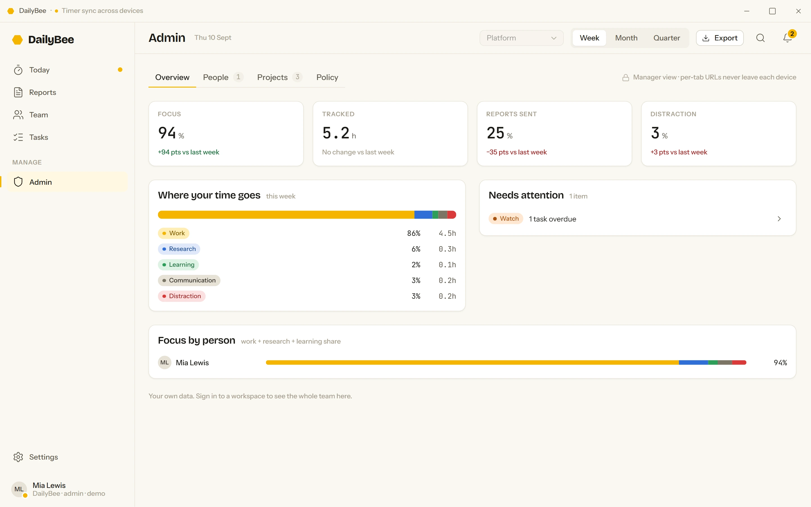
CLI and git hook
With the app running, the script in the repository talks to it from a terminal, and a git hook can start a task from a commit.
node scripts/dailybee.mjs status
node scripts/dailybee.mjs start "Fix login form" --project web-app --size Small
node scripts/dailybee.mjs stop --summary "what got done" --outcome Done
node scripts/dailybee.mjs hook install # inside a git repository; the next commit starts a task named after itTurn on Start timer on git commit in Settings for the hook to take effect.
Troubleshooting
| You see | What it means and what to do |
|---|---|
| Windows protected your PC | The build is not signed. More info › Run anyway. |
| An Application Control policy has blocked this file | Smart App Control is on. It only runs unsigned programs that were built on that machine; use a signed release or a machine without it. |
| The installer build fails with spawn UNKNOWN | Smart App Control blocked the unsigned installer stub. Build the zip (corepack pnpm package:zip) or let the GitHub Actions release workflow build the installer. |
| “DailyBee” cannot be opened because the developer cannot be verified | macOS Gatekeeper and an unsigned build. System Settings › Privacy & Security › Open Anyway. |
| Only app names, no titles or tabs (macOS) | A permission is missing. Settings › System permissions opens the panes for Accessibility, Automation and Screen Recording. |
| The timeline stays empty (Linux) | Wayland session, or xdotool is not installed. Settings › System permissions says which. |
| pnpm is not recognized | Run corepack enable in an administrator terminal, or prefix commands with corepack . |
| Electron failed to install correctly | Run node scripts/ensure-electron.mjs from the repository root; it fetches the binary pnpm skipped. |
| No update feed is configured in this build | The build was made without DAILYBEE_UPDATE_URL. Build the next version from source the same way, or host a feed as RELEASING.md describes. |
Where your data lives
Everything is in the app's data folder:
- %APPDATA%\DailyBee (paste it into Explorer's address bar)
- ~/Library/Application Support/DailyBee
- ~/.config/DailyBee
- profiles.json: the profile list and which one is open; profiles/<id>.sqlite: one database per profile with its days, tasks, reports, settings and the change log.
- dailybee-demo.sqlite: the sample day, when you ran the demo.
- Backups (*.dailybee) are copies of a profile's database, wherever you saved them.
Close the app and delete a file to reset that part. Removing a profile from the list deletes its file; a restore keeps the replaced file as <id>.sqlite.before-restore.